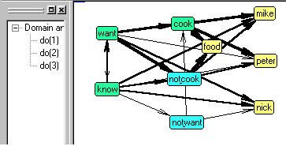

Mental Simulator
This educational tool developes general analytical skills, your capability to quickly grasp a complex situation, creative decision making and situational memory. Ability to develop a negotiation strategy in real time may be important for business and legal personnel. Starting from the selected scenario below, try to resolve it and then to add more facts or circumstrances, as well as mental states and actions of the story characters.

Read the answer:
whatToDoInConflict(mike,[cheat(mike,peter,want(nick,cook(peter,food)))]) whatToDo(nick,[inform(nick,peter,want(nick,cook(mike,food))),cheat(nick,peter, want(nick,cook(mike,food)))]) whatToDo(mike,[cheat(mike,peter,want(nick,cook(peter,food)))]) whatToDo(nick,[inform(nick,peter,want(nick,cook(mike,food))),cheat(nick,peter, want(nick,cook(mike,food)))]) whatToDoInConflict(peter,[inform(peter,mike,not cook(peter,food))])
[inform(nick,peter,want(mike,cook(peter,food))),cheat(mike,peter, want(nick,cook(peter,food))),inform(peter,mike,not cook(peter,food))]
Nick informed Peter that Mike wanted Peter to cook food.
Mike cheated Peter that Nick wanted that Peter cooked food.
Peter informed Mike that Peter would not cook.